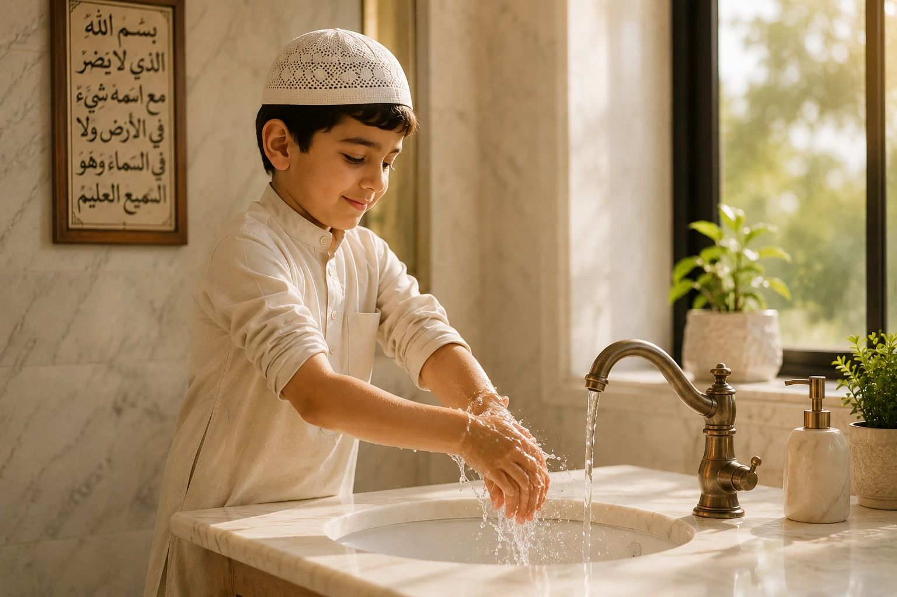
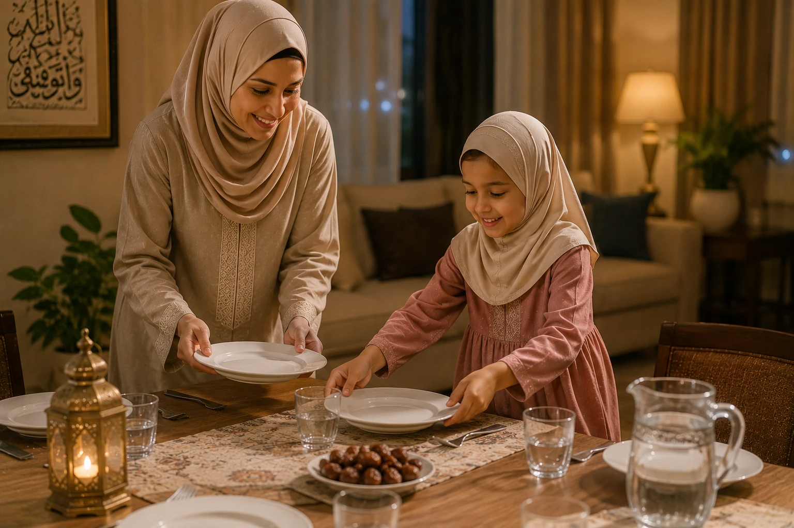
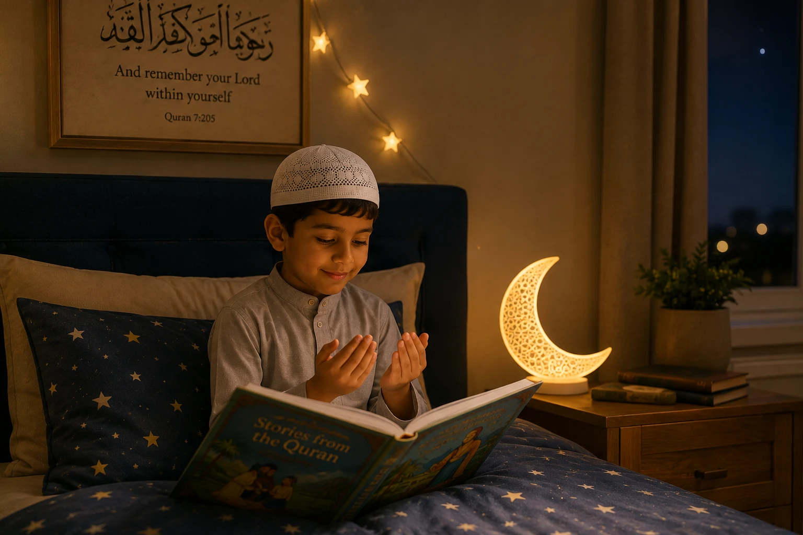

Every parent dreams of raising a child who is not only successful in this world but also beloved to Allah. But how do we turn this dream into a daily reality? The secret lies not in grand, occasional gestures, but in small, consistent daily habits. The Prophet Muhammad (peace be upon him) said: "The most beloved of deeds to Allah are those that are most consistent, even if they are small." (Bukhari 6464). In this comprehensive guide, we will explore the 10 powerful daily habits that shape a righteous Muslim child, rooted in the Quran and Sunnah.
📖 In This Complete Guide, You'll Learn:
- The 10 essential daily habits every Muslim child should practice
- How to introduce these habits gently at different ages (toddlers to teens)
- The spiritual and psychological benefits of a Sunnah-based routine
- Practical tips for parents to model and reinforce these habits
- How to handle resistance and keep the journey positive
- A free, printable habit tracker idea for your family
🔑 Key Takeaways
- Consistency beats intensity; small daily deeds build strong Iman.
- Children learn by imitation; your daily habits are their blueprint.
- Focus on connection and love, not rigid perfection.
- Anchor the day around the 5 daily prayers and the remembrance of Allah.
- Celebrate small wins to build a lifelong positive association with Islam.

📑 In This Article
- The Power of Daily Habits in Islam
- Habit 1: Waking Up Early & The Morning Adhkar
- Habit 2: Performing Wudu & The 5 Daily Prayers
- Habit 3: Reciting or Listening to Quran Daily
- Habit 4: Making Dua (Morning, Evening, & Personal)
- Habit 5: Saying Bismillah & Alhamdulillah
- Habit 6: Good Manners (Adab) & Helping Parents
- Habit 7: Giving Daily Sadaqah (Even a Smile!)
- Habit 8: Learning Something New (Deen or Dunya)
- Habit 9: Physical Activity & Cleanliness (Taharah)
- Habit 10: The Night Routine (Sleeping on Sunnah)
- How to Build These Habits Without Force
- Frequently Asked Questions
- Final Thoughts
The Power of Daily Habits in Islam
In Islam, our entire life is an act of worship if done with the right intention. Daily habits are the building blocks of our character. When a child grows up brushing their teeth, saying Bismillah, and helping their mother as a natural routine, these actions become woven into their identity. They don't just "do" good deeds; they become good people.
The Prophet (PBUH) said: "Take up good deeds only as much as you are able, for the best deeds are those done regularly even if they are few."
— Sunan Ibn Majah 4240, SahihAs parents, our goal isn't to create a checklist of burdens for our children. Our goal is to create a lifestyle where remembering Allah and doing good feels as natural as breathing. Let's break down the 10 habits that make this possible.
1 Waking Up Early & The Morning Adhkar
The day begins with barakah. The Prophet (PBUH) made dua: "O Allah, bless my Ummah in their early mornings." (Abu Dawud 2606). Waking up early (ideally for Fajr, or at least before school) sets a productive, peaceful tone for the day.
How to teach it: For toddlers, simply wake them up gently and say "Sabah al-khayr!" For older kids, teach them the morning Adhkar (Ayat ul-Kursi, the 3 Quls, and Sayyidul Istighfar). Make it a cozy family time with warm milk or dates.
2 Performing Wudu & The 5 Daily Prayers
Salah is the pillar of Islam and the direct connection between a child and Allah. Wudu is the spiritual and physical preparation for this meeting.
How to teach it: Let them have their own colorful wudu towel and step stool. Praise them for keeping their wudu throughout the day. For prayer, focus on presence and love over perfect posture in the early years. Pray together as a family whenever possible.
3 Reciting or Listening to Quran Daily
The Quran is the guidance and healing for our hearts. Even 5 minutes a day creates a massive impact over a year.
How to teach it: For non-readers, play beautiful recitations (like Mishary Rashid or Abdul Basit) in the car or during breakfast. For readers, set a small, achievable goal (like half a page). Never use Quran memorization as a punishment; it should always be associated with peace.

4 Making Dua (Morning, Evening, & Personal)
Dua is the weapon of the believer and a beautiful way to teach children that Allah is always listening and cares about their smallest worries.
How to teach it: Create a "Dua Jar" where they write down their wishes. Teach them specific duas for daily actions (entering the house, eating, traveling). Most importantly, let them hear YOU making dua for them and for the Ummah.
5 Saying Bismillah & Alhamdulillah
These two phrases bookend our day with gratitude and reliance on Allah. The Prophet (PBUH) said that saying Bismillah before eating prevents Shaytan from sharing the meal.
How to teach it: Make it a playful game for toddlers. "Oh no, I forgot to say Bismillah! Let's say it together!" For Alhamdulillah, prompt them when they finish eating, sneeze, or see something beautiful.
6 Good Manners (Adab) & Helping Parents
The Prophet (PBUH) said: "The best of you are those who are best to their families." (Tirmidhi 3895). Respecting parents, speaking gently, and helping with chores are heavy on the scales of good deeds.
How to teach it: Assign age-appropriate chores (setting the table, feeding pets, tidying toys). Praise their effort: "Masha'Allah, you are such a helpful son/daughter! Allah loves those who help their parents."
7 Giving Daily Sadaqah (Even a Smile!)
Sadaqah isn't just money. The Prophet (PBUH) said: "Your smile for your brother is charity." (Tirmidhi 1956). Teaching generosity builds a selfless heart.
How to teach it: Keep a "Sadaqah Box" at home. Let them drop a coin in it weekly. Teach them to share their snacks with siblings or neighbors. Remind them that removing a harmful object from the path is also charity.
8 Learning Something New (Deen or Dunya)
Seeking knowledge is an obligation upon every Muslim. A righteous child is a curious child who loves to learn about Allah's creation and His deen.
How to teach it: Read an Islamic storybook before bed. Watch a short, beneficial video about a Prophet's life. Encourage their worldly interests (science, art, math) and frame it as exploring Allah's universe.
9 Physical Activity & Cleanliness (Taharah)
A strong believer is better and more beloved to Allah than a weak believer. Physical health and personal hygiene are part of Iman.
How to teach it: Encourage outdoor play, swimming, or martial arts. Teach them the Sunnah of using the miswak, trimming nails, and keeping their clothes and body clean. Make bath time and brushing teeth a fun, consistent routine.
10 The Night Routine (Sleeping on Sunnah)
How we end the day determines how we start the next. Sleeping in a state of Wudu and with the remembrance of Allah protects the child spiritually.
How to teach it: Recite the 3 Quls and blow into their hands, wiping over their body. Teach them to sleep on their right side. Say the bedtime dua together: "Bismika Allahumma amutu wa ahya."
How to Build These Habits Without Force
Implementing 10 habits at once will overwhelm any child (and parent!). Here is the golden rule for success:
Pick ONE habit to focus on for 2-3 weeks. Once it becomes natural, add the next one. Celebrate their progress with a special treat or a family outing. Keep the atmosphere light, loving, and full of dua.
Do not use these habits as a weapon. Never say, "You didn't read Quran today, so you can't watch TV!" This creates resentment. Instead, say, "Let's read our Quran together so we can earn Allah's love today!"

Frequently Asked Questions
🌱 Start Small, Dream Big
You don't have to implement all 10 habits tomorrow. Pick ONE habit from this list that resonates with you. Start with it today. Make dua for your child's righteousness, and trust that Allah will bless your small, consistent efforts.
Which habit will you start with? Share your commitment below!
Final Thoughts
Raising a righteous child is the greatest project a parent can undertake. It requires patience, consistency, and a lot of dua. Remember that you are not responsible for the outcome; you are only responsible for the effort. Guide them gently, model these beautiful habits in your own life, and leave the rest to Allah. May Allah make our children the coolness of our eyes, leaders of the righteous, and a source of ongoing charity (Sadaqah Jariyah) for us in this life and the next. Ameen.